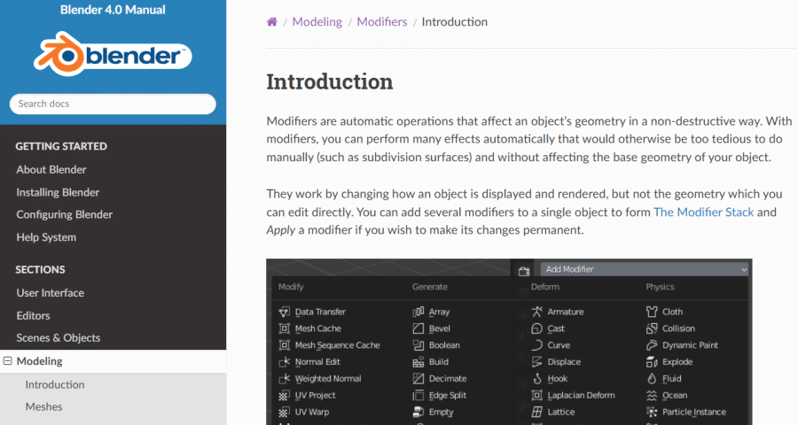

Vol.48：慢即是快
Hello，欢迎阅读我的周刊第 48 期。
上周没有更新，刚好那篇周刊的草稿放在了语雀上，又刚好那天语雀崩了，且长达七个小时访问不了。连阿里这样的大厂也会出现这种事故，就更让人觉得不能只依赖云平台来储存数据了。本身我大部分的内容都是本地 markdown + github 备份的方式来存储的，但是有时需要用手机来记东西，又想在电脑上能访问，就选了语雀这个产品，现在可能不会完全弃用，但以后肯定会优先保存本地，然后及时备份到电脑上。
慢即是快
最近发现了一个规律，但凡我想学习什么，去看官方的帮助文档，虽然慢，但却是最有帮助的。
其实做设计有一个原则是尽量让用户不需要看帮助文档，就可以轻易的使用，但是我自己体验下来，对于一个复杂的软件，结合帮助文档和实际操作会记得更牢固。我现在的工作就要体验很多竞品，但是竞品的复杂度都挺高的，所以我会选择先上手体验一下，在没有任何帮助的情况下这个产品是否易用。遇到一些我觉得不那么好用的地方，去思考为什么会这样设计，然后去翻看官方文档，看他们对这个功能的说明。一般这样看下来，即使有很多功能我还不会用，但我知道下次我要用的时候，我可以去哪个地方找到使用方法。
官方文档的优点是系统性，结构清晰，有功能的详细说明，有常见问题、注意事项等，所以不要害怕看那么多文字，有时，慢即是快。

世外桃源-墨脱
上周看到的一个视频，开头的文案很吸引人，“这是一张特殊的照片，透过它，你可以看到热带的芭蕉，亚热带的栎林，温带的冷山，甚至还有寒带的冰川，而这些画面都拍摄于同一个地方，西藏墨脱。”

一口气看完这个视频，最开始惊叹于墨脱的神奇风貌，它同时存在着一年四季的风景，滋养着多样的生灵。看到中间，又对那些坚守在墨脱，保卫祖国大地的英雄们感到敬佩。还有受困于墨脱恶劣的自然条件，通往墨脱的基建是如此的困难。总之这是一个值得推荐的视频，而且很适合作为地理历史学科的素材，比起课本，这样的内容应该更能引起学生的兴趣。还有另一个讲墨脱的视频也可以看看，更长更全面：
《艺术精神》
https://weread.qq.com/web/bookDetail/b9632c407171cf8eb969d78
又是在地铁上看的一本书，放在微信书架上很久了，这周终于翻出来看了。看书名以为会是讲艺术的理论书，结果竟然是一篇篇信件、演讲等组成的，倒是挺适合随便翻看的，不用担心看得不连贯。

《做绘本的人》
刚到的一本书《做绘本的人》，这是今年刚出版的中文版，它的原版叫做 Little big Books: Illustrations for Children's Picture Books，原版早在 2012 年就出版了。大致翻看了一下，里面内容很丰富，包含各个国家知名绘本艺术家的作品，每个人的风格都不同，值得慢慢的翻阅。

AI 视频总结
B 站推出 AI 视频总结功能，目前还是测试版，试用了一下，对教程类视频比较有用。因为看视频教程最大的缺点就是难以定位，遇到问题常常需要从头开始看，B 站的 AI 功能可以生成总分式的视频总结，先一句话概括整体内容，再按时间节点生成每一段的总结，相当于生成视频目录，可以直接点击跳转到对应的内容。

设计吐槽
星巴克小程序的杯型选项，非当前选项置灰，容易让人误认为不可选，下面的温度选择就是正常的，两者设计不一致，不知道是出于什么考虑。

订阅： 本站所有内容首发于 tangweijuan.com，支持 RSS 订阅，同步更新于微信公众号「Afterwork Time」，欢迎扫描下方二维码订阅。